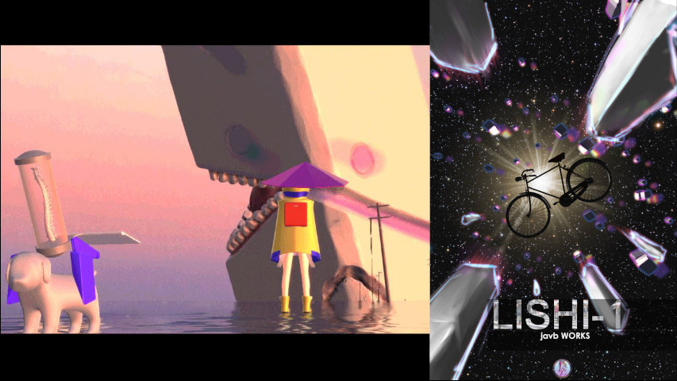
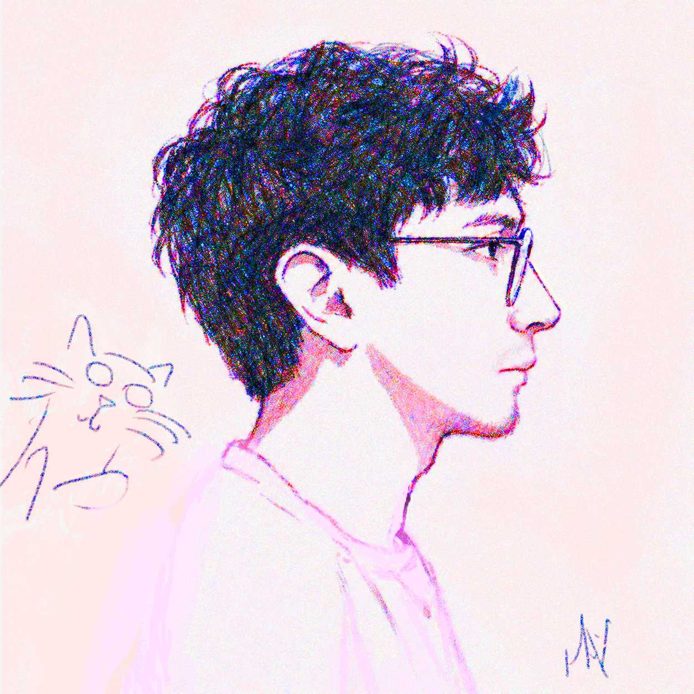
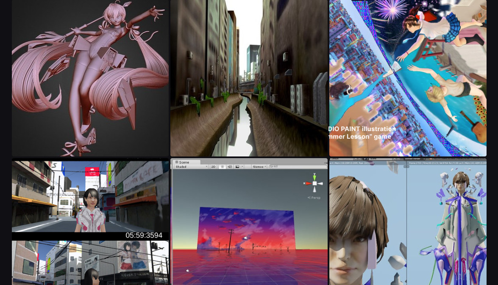
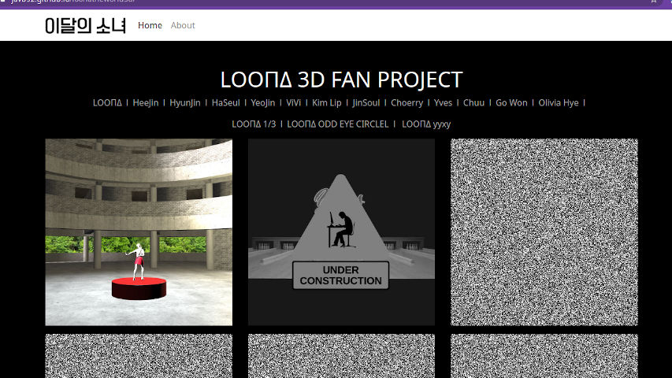
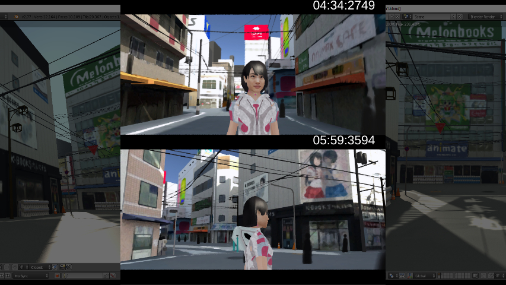
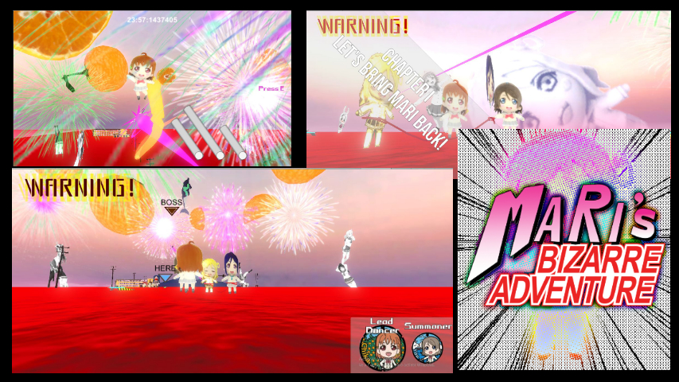
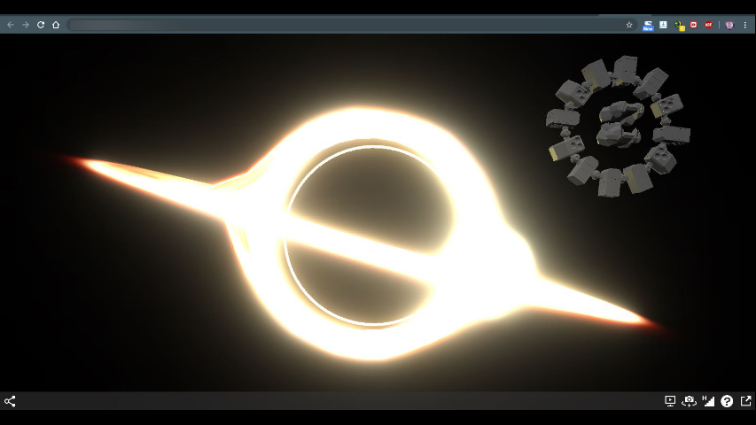
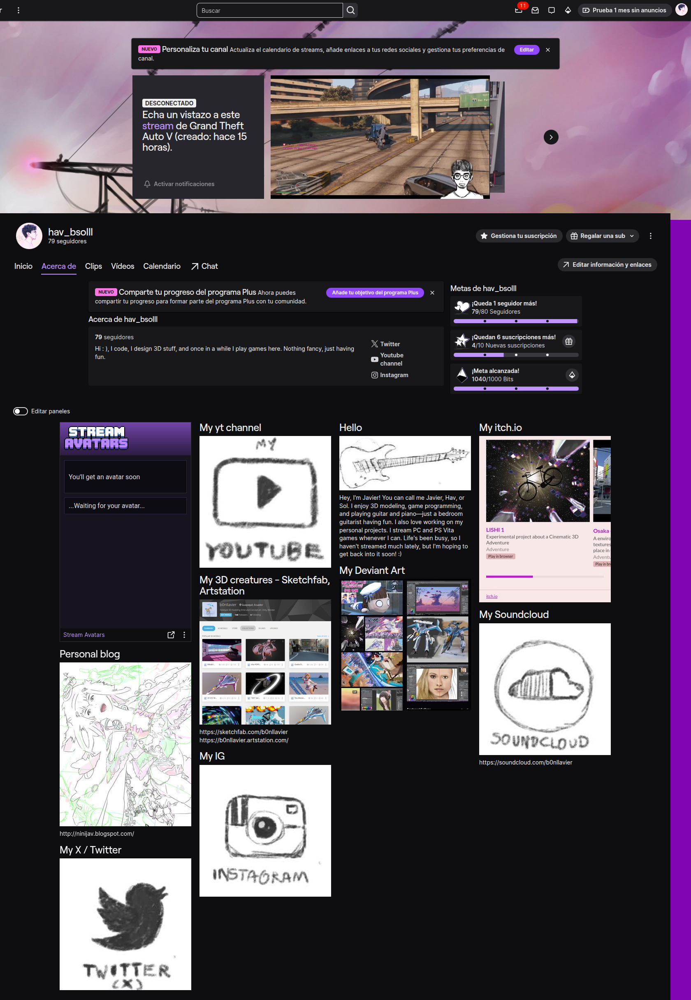

01Interactive 3D adventure
LISHI-1
A cinematic real-time experience focused on atmosphere, exploration and environmental storytelling.
3D art · real-time graphics · creative technology
3D Artist & Creative Developer
I work between two worlds: 3D art and real-time experiences, and backend engineering for Adobe Commerce Cloud—with six years of professional experience on the platform.

01 / Selected work
A selection of games, digital environments and real-time experiments where visual storytelling and technology meet.

01Interactive 3D adventure
A cinematic real-time experience focused on atmosphere, exploration and environmental storytelling.

023D art portfolio
A broader collection of modeling, environments, experiments and personal visual studies.

03Music visualization
A browser-based K-pop stage visualizer designed in Blender and brought to life with Babylon.js.

04Interactive environment
A walkable recreation of Osaka's Den Den Town, exploring fast-painted textures and stylized environmental design.

053D game
A playful fan-made adventure inspired by the characters and world of Love Live! Sunshine!!

06Real-time simulation
A browser-based visual study of a black hole, inspired by the cinematic language of Interstellar.
02 / Engineering experience
Six years of professional Adobe Commerce Cloud experience, supported by a wider archive of software and technical experiments.
Adobe Commerce Cloud / Magento 2
My work is primarily backend: custom modules, integrations, APIs, data flows and platform maintenance. I also have practical front-end experience when a project requires it.
03 / Creative practice
My practice moves between digital art and software development. I enjoy transforming technical systems into expressive experiences—whether that means shaping a 3D environment, prototyping a game or building a robust web platform.
Commercial development gives structure to my work; art, curiosity and experimentation give it direction.
3D modeling, environments and visual storytelling.
Games, real-time graphics and creative web experiments.
Six years of backend-focused Adobe Commerce engineering built for real use.

Weekend streams04 / Live on Twitch
On weekends I step away from project work and stream on Twitch—playing games, occasionally picking up the guitar and sharing a more relaxed side of my creative life.